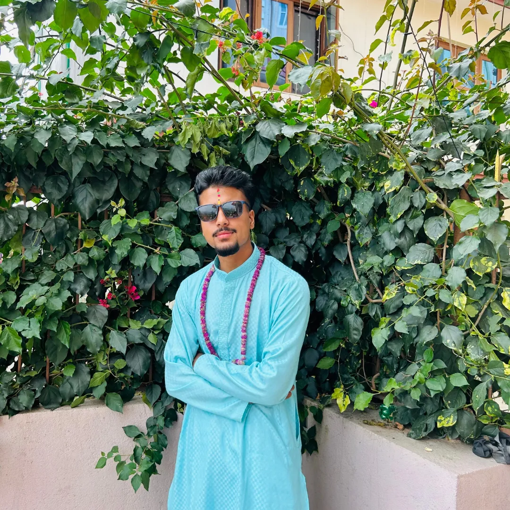

About Me
I am Pratik Gelal, a Computer Science student from Bhaktapur, Nepal, currently studying Artificial Intelligence at Softwarica College. I have completed my +2 Science from Khwopa Higher Secondary School with a strong foundation in science and technology.
I am passionate about Artificial Intelligence, Python programming, and software development. I enjoy solving problems, learning new technologies, and building real-world projects to improve my skills.
My goal is to become a skilled Data Scientist and AI developer, creating innovative solutions that make a meaningful impact in the tech industry.